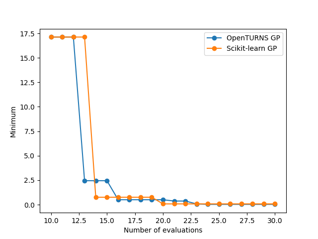
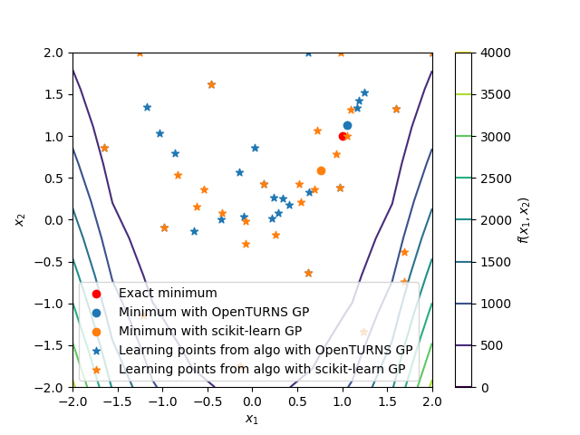

Note
Click here to download the full example code
GP regressor.¶
from __future__ import annotations
import matplotlib.pyplot as plt
from gemseo import configure
from gemseo import configure_logger
from gemseo import sample_disciplines
from gemseo.mlearning.regression.algos.gpr import GaussianProcessRegressor
from gemseo.mlearning.regression.algos.ot_gpr import OTGaussianProcessRegressor
from numpy import argmin
from numpy import concatenate
from numpy import unique
from gemseo_mlearning.active_learning.active_learning_algo import ActiveLearningAlgo
from gemseo_mlearning.problems.rosenbrock.rosenbrock_discipline import (
RosenbrockDiscipline,
)
from gemseo_mlearning.problems.rosenbrock.rosenbrock_space import RosenbrockSpace
# Update the configuration of |g| to speed up the script (use configure() with care)
configure(False, False, True, False, False, False, False)
configure_logger()
Out:
<RootLogger root (INFO)>
The use of active learning methods dedicated to optimization is illustrated in this example. More specifically, we aim to test here the impact of the choice of the acquisition criterion used to enrich the dataset on the active learning procedure. The function to minimize is the Rosenbrock function \(f(x_1,x_2)=(1-x_1)^2+100(x_2-x_1^2)^2\):
discipline = RosenbrockDiscipline()
with \(x_1\) and \(x_2\) belonging to \([-2,2]^2\):
input_space = RosenbrockSpace()
First, we create an initial training dataset using an optimal LHS including 10 samples:
learning_dataset = sample_disciplines(
[discipline], input_space, "y", algo_name="OT_OPT_LHS", n_samples=10
)
Out:
WARNING - 05:28:13: No coupling in MDA, switching chain_linearize to True.
INFO - 05:28:13: *** Start Sampling execution ***
INFO - 05:28:13: Sampling
INFO - 05:28:13: Disciplines: RosenbrockDiscipline
INFO - 05:28:13: MDO formulation: MDF
INFO - 05:28:13: Running the algorithm OT_OPT_LHS:
INFO - 05:28:13: 10%|█ | 1/10 [00:00<00:00, 4211.15 it/sec]
INFO - 05:28:13: 20%|██ | 2/10 [00:00<00:00, 3679.21 it/sec]
INFO - 05:28:13: 30%|███ | 3/10 [00:00<00:00, 3878.83 it/sec]
INFO - 05:28:13: 40%|████ | 4/10 [00:00<00:00, 4073.13 it/sec]
INFO - 05:28:13: 50%|█████ | 5/10 [00:00<00:00, 4223.02 it/sec]
INFO - 05:28:13: 60%|██████ | 6/10 [00:00<00:00, 4335.94 it/sec]
INFO - 05:28:13: 70%|███████ | 7/10 [00:00<00:00, 4343.21 it/sec]
INFO - 05:28:13: 80%|████████ | 8/10 [00:00<00:00, 4421.46 it/sec]
INFO - 05:28:13: 90%|█████████ | 9/10 [00:00<00:00, 4490.16 it/sec]
INFO - 05:28:13: 100%|██████████| 10/10 [00:00<00:00, 4544.21 it/sec]
INFO - 05:28:13: *** End Sampling execution ***
and one Gaussian process regressor OpenTURNS:
regressor_1 = OTGaussianProcessRegressor(learning_dataset, trend="quadratic")
# and the other from scikit-learn:
regressor_2 = GaussianProcessRegressor(learning_dataset)
Then, we build two active learning algorithms to test the impact of the choice of the GP on the active learning procedure, one from the OpenTURNS library and the second from scikit-learn. Those two are notably different, in particular, GPs from scikit-learn do not include trend modeling. All other settings are put to their default values.
active_learning_1 = ActiveLearningAlgo("Minimum", input_space, regressor_1)
active_learning_2 = ActiveLearningAlgo("Minimum", input_space, regressor_2)
active_learning_1.acquire_new_points(discipline, n_samples=20)
active_learning_2.acquire_new_points(discipline, n_samples=20)
Out:
/builds/gemseo/dev/gemseo-mlearning/.tox/doc/lib64/python3.12/site-packages/sklearn/gaussian_process/kernels.py:450: ConvergenceWarning: The optimal value found for dimension 0 of parameter length_scale is close to the specified upper bound 100.0. Increasing the bound and calling fit again may find a better value.
warnings.warn(
INFO - 05:28:13: Acquiring 20 points in batches of 1
INFO - 05:28:14: 5%|5 | 1/20 [00:00<00:08, 2.30 it/sec]
INFO - 05:28:14: 10%|# | 2/20 [00:00<00:07, 2.34 it/sec]
INFO - 05:28:15: 15%|#5 | 3/20 [00:01<00:07, 2.36 it/sec]
/builds/gemseo/dev/gemseo-mlearning/src/gemseo_mlearning/active_learning/acquisition_criteria/maximum/_expected_impovement.py:55: RuntimeWarning: divide by zero encountered in divide
value = nan_to_num(improvement / std)
/builds/gemseo/dev/gemseo-mlearning/.tox/doc/lib64/python3.12/site-packages/scipy/stats/_continuous_distns.py:361: RuntimeWarning: overflow encountered in square
return np.exp(-x**2/2.0) / _norm_pdf_C
INFO - 05:28:15: 20%|## | 4/20 [00:01<00:06, 2.37 it/sec]
/builds/gemseo/dev/gemseo-mlearning/src/gemseo_mlearning/active_learning/acquisition_criteria/maximum/_expected_impovement.py:55: RuntimeWarning: divide by zero encountered in divide
value = nan_to_num(improvement / std)
/builds/gemseo/dev/gemseo-mlearning/.tox/doc/lib64/python3.12/site-packages/scipy/stats/_continuous_distns.py:361: RuntimeWarning: overflow encountered in square
return np.exp(-x**2/2.0) / _norm_pdf_C
INFO - 05:28:15: 25%|##5 | 5/20 [00:02<00:06, 2.41 it/sec]
INFO - 05:28:16: 30%|### | 6/20 [00:02<00:05, 2.40 it/sec]
INFO - 05:28:16: 35%|###5 | 7/20 [00:02<00:05, 2.38 it/sec]
INFO - 05:28:17: 40%|#### | 8/20 [00:03<00:04, 2.43 it/sec]
INFO - 05:28:17: 45%|####5 | 9/20 [00:03<00:04, 2.40 it/sec]
/builds/gemseo/dev/gemseo-mlearning/src/gemseo_mlearning/active_learning/acquisition_criteria/maximum/_expected_impovement.py:55: RuntimeWarning: divide by zero encountered in divide
value = nan_to_num(improvement / std)
/builds/gemseo/dev/gemseo-mlearning/.tox/doc/lib64/python3.12/site-packages/scipy/stats/_continuous_distns.py:361: RuntimeWarning: overflow encountered in square
return np.exp(-x**2/2.0) / _norm_pdf_C
INFO - 05:28:18: 50%|##### | 10/20 [00:04<00:04, 2.41 it/sec]
/builds/gemseo/dev/gemseo-mlearning/src/gemseo_mlearning/active_learning/acquisition_criteria/maximum/_expected_impovement.py:55: RuntimeWarning: divide by zero encountered in divide
value = nan_to_num(improvement / std)
/builds/gemseo/dev/gemseo-mlearning/.tox/doc/lib64/python3.12/site-packages/scipy/stats/_continuous_distns.py:361: RuntimeWarning: overflow encountered in square
return np.exp(-x**2/2.0) / _norm_pdf_C
INFO - 05:28:18: 55%|#####5 | 11/20 [00:04<00:03, 2.38 it/sec]
INFO - 05:28:18: 60%|###### | 12/20 [00:04<00:03, 2.42 it/sec]
INFO - 05:28:19: 65%|######5 | 13/20 [00:05<00:02, 2.41 it/sec]
/builds/gemseo/dev/gemseo-mlearning/src/gemseo_mlearning/active_learning/acquisition_criteria/maximum/_expected_impovement.py:55: RuntimeWarning: divide by zero encountered in divide
value = nan_to_num(improvement / std)
/builds/gemseo/dev/gemseo-mlearning/.tox/doc/lib64/python3.12/site-packages/scipy/stats/_continuous_distns.py:361: RuntimeWarning: overflow encountered in square
return np.exp(-x**2/2.0) / _norm_pdf_C
INFO - 05:28:19: 70%|####### | 14/20 [00:05<00:02, 2.43 it/sec]
INFO - 05:28:19: 75%|#######5 | 15/20 [00:06<00:01, 2.46 it/sec]
INFO - 05:28:20: 80%|######## | 16/20 [00:06<00:01, 2.47 it/sec]
/builds/gemseo/dev/gemseo-mlearning/src/gemseo_mlearning/active_learning/acquisition_criteria/maximum/_expected_impovement.py:55: RuntimeWarning: divide by zero encountered in divide
value = nan_to_num(improvement / std)
/builds/gemseo/dev/gemseo-mlearning/.tox/doc/lib64/python3.12/site-packages/scipy/stats/_continuous_distns.py:361: RuntimeWarning: overflow encountered in square
return np.exp(-x**2/2.0) / _norm_pdf_C
INFO - 05:28:20: 85%|########5 | 17/20 [00:06<00:01, 2.50 it/sec]
INFO - 05:28:20: 90%|######### | 18/20 [00:07<00:00, 2.53 it/sec]
/builds/gemseo/dev/gemseo-mlearning/src/gemseo_mlearning/active_learning/acquisition_criteria/maximum/_expected_impovement.py:55: RuntimeWarning: divide by zero encountered in divide
value = nan_to_num(improvement / std)
/builds/gemseo/dev/gemseo-mlearning/.tox/doc/lib64/python3.12/site-packages/scipy/stats/_continuous_distns.py:361: RuntimeWarning: overflow encountered in square
return np.exp(-x**2/2.0) / _norm_pdf_C
INFO - 05:28:21: 95%|#########5| 19/20 [00:07<00:00, 2.55 it/sec]
INFO - 05:28:21: 100%|##########| 20/20 [00:07<00:00, 2.58 it/sec]
INFO - 05:28:21: 100%|##########| 20/20 [00:07<00:00, 2.58 it/sec]
INFO - 05:28:21: Acquiring 20 points in batches of 1
/builds/gemseo/dev/gemseo-mlearning/.tox/doc/lib64/python3.12/site-packages/sklearn/gaussian_process/kernels.py:450: ConvergenceWarning: The optimal value found for dimension 0 of parameter length_scale is close to the specified upper bound 100.0. Increasing the bound and calling fit again may find a better value.
warnings.warn(
INFO - 05:28:22: 5%|5 | 1/20 [00:00<00:09, 2.01 it/sec]
INFO - 05:28:22: 10%|# | 2/20 [00:01<00:09, 1.95 it/sec]
INFO - 05:28:23: 15%|#5 | 3/20 [00:01<00:08, 1.95 it/sec]
INFO - 05:28:23: 20%|## | 4/20 [00:02<00:08, 1.95 it/sec]
INFO - 05:28:24: 25%|##5 | 5/20 [00:02<00:07, 1.96 it/sec]
INFO - 05:28:24: 30%|### | 6/20 [00:03<00:07, 1.96 it/sec]
INFO - 05:28:25: 35%|###5 | 7/20 [00:03<00:06, 1.96 it/sec]
INFO - 05:28:25: 40%|#### | 8/20 [00:04<00:06, 1.96 it/sec]
INFO - 05:28:26: 45%|####5 | 9/20 [00:04<00:05, 1.94 it/sec]
INFO - 05:28:26: 50%|##### | 10/20 [00:05<00:05, 1.94 it/sec]
INFO - 05:28:27: 55%|#####5 | 11/20 [00:05<00:04, 1.93 it/sec]
INFO - 05:28:27: 60%|###### | 12/20 [00:06<00:04, 1.93 it/sec]
INFO - 05:28:28: 65%|######5 | 13/20 [00:06<00:03, 1.92 it/sec]
INFO - 05:28:28: 70%|####### | 14/20 [00:07<00:03, 1.92 it/sec]
INFO - 05:28:29: 75%|#######5 | 15/20 [00:07<00:02, 1.91 it/sec]
INFO - 05:28:29: 80%|######## | 16/20 [00:08<00:02, 1.90 it/sec]
INFO - 05:28:30: 85%|########5 | 17/20 [00:08<00:01, 1.89 it/sec]
INFO - 05:28:31: 90%|######### | 18/20 [00:09<00:01, 1.89 it/sec]
INFO - 05:28:31: 95%|#########5| 19/20 [00:10<00:00, 1.88 it/sec]
INFO - 05:28:32: 100%|##########| 20/20 [00:10<00:00, 1.87 it/sec]
INFO - 05:28:32: 100%|##########| 20/20 [00:10<00:00, 1.87 it/sec]
(<gemseo.algos.database.Database object at 0x79b23a0bdd60>, Optimization problem:
minimize -EI
with respect to x)
To study the results, we extract first the data associated to the history of the quantity of interest for both active learning procedures
history_1 = active_learning_1.qoi_history
history_2 = active_learning_2.qoi_history
# and we compare them in a plot
plt.plot(history_1[0], concatenate(history_1[1]), marker="o", label="OpenTURNS GP")
plt.plot(history_2[0], concatenate(history_2[1]), marker="o", label="Scikit-learn GP")
plt.xlabel("Number of evaluations")
plt.ylabel("Minimum")
plt.legend()
plt.show()

We can also compare the estimated optimas from the active learning procedures to their exact counterparts for both algorithms
Finally, for both active learning algorithms, we plot the training points, alongside the original model.
# Creation of the grid
# and estimation of the different quantities
n_test = 10
observations = sample_disciplines(
[discipline], input_space, "y", algo_name="OT_FULLFACT", n_samples=n_test**2
).values
# Plotting the exact minimum and the estimated minima
# alongside the learning points
plt.figure()
points_1 = active_learning_1.regressor.learning_set.to_numpy()
points_2 = active_learning_2.regressor.learning_set.to_numpy()
plt.contour(
unique(observations[:, 0]),
unique(observations[:, 1]),
observations[:, 2].reshape(n_test, n_test),
)
bar = plt.colorbar()
bar.set_label(r"$f(x_1,x_2)$")
plt.scatter([1], [1], marker="o", label="Exact minimum", color="red")
plt.scatter(
points_1[argmin(points_1[:, -1]), 0],
points_1[argmin(points_1[:, -1]), 1],
marker="o",
label="Minimum with OpenTURNS GP",
)
plt.scatter(
points_2[argmin(points_2[:, -1]), 0],
points_2[argmin(points_2[:, -1]), 1],
marker="o",
label="Minimum with scikit-learn GP",
)
plt.scatter(
points_1[:, 0],
points_1[:, 1],
marker="*",
label="Learning points from algo with OpenTURNS GP",
color="tab:blue",
)
plt.scatter(
points_2[:, 0],
points_2[:, 1],
marker="*",
label="Learning points from algo with scikit-learn GP",
color="tab:orange",
)
plt.xlabel(r"$x_1$")
plt.ylabel(r"$x_2$")
plt.legend()
plt.show()

Out:
WARNING - 05:28:32: No coupling in MDA, switching chain_linearize to True.
INFO - 05:28:32: *** Start Sampling execution ***
INFO - 05:28:32: Sampling
INFO - 05:28:32: Disciplines: RosenbrockDiscipline
INFO - 05:28:32: MDO formulation: MDF
INFO - 05:28:32: Running the algorithm OT_FULLFACT:
INFO - 05:28:32: 1%| | 1/100 [00:00<00:00, 3663.15 it/sec]
INFO - 05:28:32: 2%|▏ | 2/100 [00:00<00:00, 3622.02 it/sec]
INFO - 05:28:32: 3%|▎ | 3/100 [00:00<00:00, 3701.95 it/sec]
INFO - 05:28:32: 4%|▍ | 4/100 [00:00<00:00, 3708.49 it/sec]
INFO - 05:28:32: 5%|▌ | 5/100 [00:00<00:00, 3809.54 it/sec]
INFO - 05:28:32: 6%|▌ | 6/100 [00:00<00:00, 3898.66 it/sec]
INFO - 05:28:32: 7%|▋ | 7/100 [00:00<00:00, 3939.37 it/sec]
INFO - 05:28:32: 8%|▊ | 8/100 [00:00<00:00, 3946.65 it/sec]
INFO - 05:28:32: 9%|▉ | 9/100 [00:00<00:00, 3992.46 it/sec]
INFO - 05:28:32: 10%|█ | 10/100 [00:00<00:00, 4036.87 it/sec]
INFO - 05:28:32: 11%|█ | 11/100 [00:00<00:00, 4062.10 it/sec]
INFO - 05:28:32: 12%|█▏ | 12/100 [00:00<00:00, 4058.35 it/sec]
INFO - 05:28:32: 13%|█▎ | 13/100 [00:00<00:00, 4081.59 it/sec]
INFO - 05:28:32: 14%|█▍ | 14/100 [00:00<00:00, 4113.79 it/sec]
INFO - 05:28:32: 15%|█▌ | 15/100 [00:00<00:00, 4139.66 it/sec]
INFO - 05:28:32: 16%|█▌ | 16/100 [00:00<00:00, 4109.04 it/sec]
INFO - 05:28:32: 17%|█▋ | 17/100 [00:00<00:00, 4125.15 it/sec]
INFO - 05:28:32: 18%|█▊ | 18/100 [00:00<00:00, 4149.81 it/sec]
INFO - 05:28:32: 19%|█▉ | 19/100 [00:00<00:00, 4173.00 it/sec]
INFO - 05:28:32: 20%|██ | 20/100 [00:00<00:00, 4184.05 it/sec]
INFO - 05:28:32: 21%|██ | 21/100 [00:00<00:00, 4178.39 it/sec]
INFO - 05:28:32: 22%|██▏ | 22/100 [00:00<00:00, 4192.78 it/sec]
INFO - 05:28:32: 23%|██▎ | 23/100 [00:00<00:00, 4207.48 it/sec]
INFO - 05:28:32: 24%|██▍ | 24/100 [00:00<00:00, 4215.91 it/sec]
INFO - 05:28:32: 25%|██▌ | 25/100 [00:00<00:00, 4211.15 it/sec]
INFO - 05:28:32: 26%|██▌ | 26/100 [00:00<00:00, 4221.26 it/sec]
INFO - 05:28:32: 27%|██▋ | 27/100 [00:00<00:00, 4235.09 it/sec]
INFO - 05:28:32: 28%|██▊ | 28/100 [00:00<00:00, 4248.78 it/sec]
INFO - 05:28:32: 29%|██▉ | 29/100 [00:00<00:00, 4249.99 it/sec]
INFO - 05:28:32: 30%|███ | 30/100 [00:00<00:00, 4246.68 it/sec]
INFO - 05:28:32: 31%|███ | 31/100 [00:00<00:00, 4253.72 it/sec]
INFO - 05:28:32: 32%|███▏ | 32/100 [00:00<00:00, 4262.77 it/sec]
INFO - 05:28:32: 33%|███▎ | 33/100 [00:00<00:00, 4264.21 it/sec]
INFO - 05:28:32: 34%|███▍ | 34/100 [00:00<00:00, 4261.74 it/sec]
INFO - 05:28:32: 35%|███▌ | 35/100 [00:00<00:00, 4270.69 it/sec]
INFO - 05:28:32: 36%|███▌ | 36/100 [00:00<00:00, 4280.39 it/sec]
INFO - 05:28:32: 37%|███▋ | 37/100 [00:00<00:00, 4291.98 it/sec]
INFO - 05:28:32: 38%|███▊ | 38/100 [00:00<00:00, 4293.51 it/sec]
INFO - 05:28:32: 39%|███▉ | 39/100 [00:00<00:00, 4290.79 it/sec]
INFO - 05:28:32: 40%|████ | 40/100 [00:00<00:00, 4298.65 it/sec]
INFO - 05:28:32: 41%|████ | 41/100 [00:00<00:00, 4306.37 it/sec]
INFO - 05:28:32: 42%|████▏ | 42/100 [00:00<00:00, 4309.85 it/sec]
INFO - 05:28:32: 43%|████▎ | 43/100 [00:00<00:00, 4306.27 it/sec]
INFO - 05:28:32: 44%|████▍ | 44/100 [00:00<00:00, 4309.48 it/sec]
INFO - 05:28:32: 45%|████▌ | 45/100 [00:00<00:00, 4318.29 it/sec]
INFO - 05:28:32: 46%|████▌ | 46/100 [00:00<00:00, 4326.93 it/sec]
INFO - 05:28:32: 47%|████▋ | 47/100 [00:00<00:00, 4329.72 it/sec]
INFO - 05:28:32: 48%|████▊ | 48/100 [00:00<00:00, 4326.91 it/sec]
INFO - 05:28:32: 49%|████▉ | 49/100 [00:00<00:00, 4331.95 it/sec]
INFO - 05:28:32: 50%|█████ | 50/100 [00:00<00:00, 4338.52 it/sec]
INFO - 05:28:32: 51%|█████ | 51/100 [00:00<00:00, 4339.46 it/sec]
INFO - 05:28:32: 52%|█████▏ | 52/100 [00:00<00:00, 4337.27 it/sec]
INFO - 05:28:32: 53%|█████▎ | 53/100 [00:00<00:00, 4342.44 it/sec]
INFO - 05:28:32: 54%|█████▍ | 54/100 [00:00<00:00, 4348.18 it/sec]
INFO - 05:28:32: 55%|█████▌ | 55/100 [00:00<00:00, 4352.17 it/sec]
INFO - 05:28:32: 56%|█████▌ | 56/100 [00:00<00:00, 4352.55 it/sec]
INFO - 05:28:32: 57%|█████▋ | 57/100 [00:00<00:00, 4346.75 it/sec]
INFO - 05:28:32: 58%|█████▊ | 58/100 [00:00<00:00, 4352.03 it/sec]
INFO - 05:28:32: 59%|█████▉ | 59/100 [00:00<00:00, 4358.37 it/sec]
INFO - 05:28:32: 60%|██████ | 60/100 [00:00<00:00, 4360.36 it/sec]
INFO - 05:28:32: 61%|██████ | 61/100 [00:00<00:00, 4356.94 it/sec]
INFO - 05:28:32: 62%|██████▏ | 62/100 [00:00<00:00, 4360.86 it/sec]
INFO - 05:28:32: 63%|██████▎ | 63/100 [00:00<00:00, 4366.32 it/sec]
INFO - 05:28:32: 64%|██████▍ | 64/100 [00:00<00:00, 4371.41 it/sec]
INFO - 05:28:32: 65%|██████▌ | 65/100 [00:00<00:00, 4372.85 it/sec]
INFO - 05:28:32: 66%|██████▌ | 66/100 [00:00<00:00, 4369.34 it/sec]
INFO - 05:28:32: 67%|██████▋ | 67/100 [00:00<00:00, 4372.06 it/sec]
INFO - 05:28:32: 68%|██████▊ | 68/100 [00:00<00:00, 4375.97 it/sec]
INFO - 05:28:32: 69%|██████▉ | 69/100 [00:00<00:00, 4374.88 it/sec]
INFO - 05:28:32: 70%|███████ | 70/100 [00:00<00:00, 4372.45 it/sec]
INFO - 05:28:32: 71%|███████ | 71/100 [00:00<00:00, 4375.94 it/sec]
INFO - 05:28:32: 72%|███████▏ | 72/100 [00:00<00:00, 4380.66 it/sec]
INFO - 05:28:32: 73%|███████▎ | 73/100 [00:00<00:00, 4385.59 it/sec]
INFO - 05:28:32: 74%|███████▍ | 74/100 [00:00<00:00, 4387.72 it/sec]
INFO - 05:28:32: 75%|███████▌ | 75/100 [00:00<00:00, 4386.61 it/sec]
INFO - 05:28:32: 76%|███████▌ | 76/100 [00:00<00:00, 4390.37 it/sec]
INFO - 05:28:32: 77%|███████▋ | 77/100 [00:00<00:00, 4394.33 it/sec]
INFO - 05:28:32: 78%|███████▊ | 78/100 [00:00<00:00, 4394.01 it/sec]
INFO - 05:28:32: 79%|███████▉ | 79/100 [00:00<00:00, 4391.36 it/sec]
INFO - 05:28:32: 80%|████████ | 80/100 [00:00<00:00, 4394.01 it/sec]
INFO - 05:28:32: 81%|████████ | 81/100 [00:00<00:00, 4398.59 it/sec]
INFO - 05:28:32: 82%|████████▏ | 82/100 [00:00<00:00, 4402.96 it/sec]
INFO - 05:28:32: 83%|████████▎ | 83/100 [00:00<00:00, 4403.11 it/sec]
INFO - 05:28:32: 84%|████████▍ | 84/100 [00:00<00:00, 4401.54 it/sec]
INFO - 05:28:32: 85%|████████▌ | 85/100 [00:00<00:00, 4405.40 it/sec]
INFO - 05:28:32: 86%|████████▌ | 86/100 [00:00<00:00, 4408.31 it/sec]
INFO - 05:28:32: 87%|████████▋ | 87/100 [00:00<00:00, 4408.92 it/sec]
INFO - 05:28:32: 88%|████████▊ | 88/100 [00:00<00:00, 4371.50 it/sec]
INFO - 05:28:32: 89%|████████▉ | 89/100 [00:00<00:00, 4372.65 it/sec]
INFO - 05:28:32: 90%|█████████ | 90/100 [00:00<00:00, 4374.64 it/sec]
INFO - 05:28:32: 91%|█████████ | 91/100 [00:00<00:00, 4375.33 it/sec]
INFO - 05:28:32: 92%|█████████▏| 92/100 [00:00<00:00, 4372.63 it/sec]
INFO - 05:28:32: 93%|█████████▎| 93/100 [00:00<00:00, 4374.90 it/sec]
INFO - 05:28:32: 94%|█████████▍| 94/100 [00:00<00:00, 4377.85 it/sec]
INFO - 05:28:32: 95%|█████████▌| 95/100 [00:00<00:00, 4375.78 it/sec]
INFO - 05:28:32: 96%|█████████▌| 96/100 [00:00<00:00, 4373.62 it/sec]
INFO - 05:28:32: 97%|█████████▋| 97/100 [00:00<00:00, 4375.55 it/sec]
INFO - 05:28:32: 98%|█████████▊| 98/100 [00:00<00:00, 4377.81 it/sec]
INFO - 05:28:32: 99%|█████████▉| 99/100 [00:00<00:00, 4381.05 it/sec]
INFO - 05:28:32: 100%|██████████| 100/100 [00:00<00:00, 4381.89 it/sec]
INFO - 05:28:32: *** End Sampling execution ***
Total running time of the script: ( 0 minutes 18.800 seconds)
Download Python source code: plot_optim_gp.py